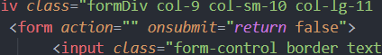

Enter whichever city you'd like and see if you need to take an umbrella when you go outside!

My goal was to learn how asynchronous code works by learning how to implement data fetching. Is there a better way to learn how to do something, other than practicing it? Honestly, I don't think so.
The form section on this app is not sending an input anywhere and js was programmed in a way that it simply takes an input.value parameter when submit button or enter is clicked.
Learning that it's clear that we don't need a page to reload, so to prevent that, I learned about onsubmit event and used it accordingly:
Through this project, I learned how APIs and asynchronous code work. Even though I planned to style this application using (unknown to me at that time) CSS preprocessor, which is Sass, after figuring out how easy it is, I got to style most of an app with Bootstrap.